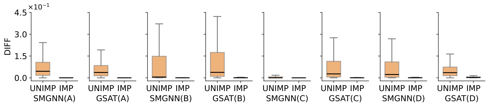
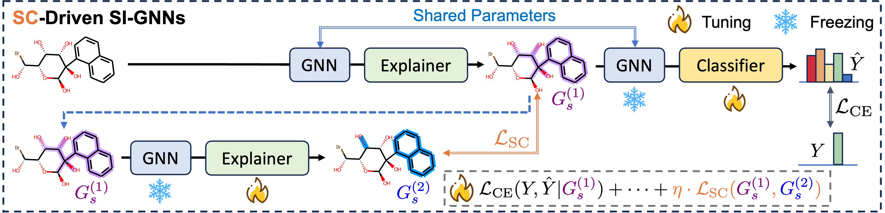
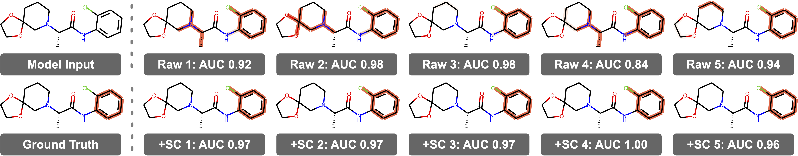

Self-Consistency Improves the Trustworthiness of Self-Interpretable GNNs
Wenxin Tai1, Ting Zhong1, Goce Trajcevski2, Fan Zhou1
1 University of Electronic Science and Technology of China 2 Iowa State University
Abstract
Graph Neural Networks (GNNs) achieve strong predictive performance but offer limited transparency in their decision-making. Self-Interpretable GNNs (SI-GNNs) address this by generating built-in explanations, yet their training objectives are misaligned with evaluation criteria such as faithfulness. This raises two key questions: (i) can faithfulness be explicitly optimized during training, and (ii) does such optimization genuinely improve explanation quality? We show that faithfulness is intrinsically tied to explanation self-consistency and can therefore be optimized directly. Empirical analysis further reveals that self-inconsistency predominantly occurs on unimportant features, linking it to redundancy-driven explanation inconsistency observed in recent work and suggesting untapped potential for improving explanation quality. Building on these insights, we introduce a simple, model-agnostic self-consistency (SC) training strategy. Without changing architectures or pipelines, SC consistently improves explanation quality across multiple dimensions and benchmarks, offering an effective and scalable pathway to more trustworthy GNN explanations.
(i) Can faithfulness be optimized during training?
(ii) Even if feasible, does it truly improve explanation quality?
Key Insight
(i) Can faithfulness be optimized? Yes—by enforcing self-consistency of explanations.
Let \( h_{G_s}(G) \) denote the explainer that extracts a subgraph \( G_s \). Instead of directly constraining predictions, we require the explainer to be consistent when reusing its own output:
\[ h_{G_s}(G) = h_{G_s}(G_s) \]
If the explanation truly captures what drives the prediction, such self-consistency naturally leads to faithful behavior.
\[ \underbrace{f(G_s) = f(G)}_{\text{faithfulness}} \quad \Longrightarrow \quad \underbrace{h_{G_s}(G) = h_{G_s}(G_s)}_{\text{self-consistency}} \]
(ii) Does it improve explanation quality? Yes—but not in an obvious way. Our empirical findings reveal that without self-consistency, explanations can vary significantly across repeated passes of the same model. Using benchmark datasets with ground-truth explanations, we further observe that self-inconsistency primarily arises from instability on features labeled as unimportant, while important features remain stable.

This behavior closely relates to explanation redundancy observed in recent work (Tai et al., 2025), where explainers allocate unnecessary importance to irrelevant features when budget allowed. That work further showed that addressing redundancy improves explanation quality. Since our study shows that self-inconsistency also concentrates on unimportant features, it suggests a potential connection: addressing self-inconsistency may address redundancy as well, thereby improving explanation quality in a similar manner.
Method: Self-Consistency Fine-Tuning

We adopt a simple two-stage training framework. First, a SI-GNN is trained with the standard objective. Then, we freeze the encoder and fine-tune the explainer and classifier.
During fine-tuning, given an input graph \( G \), the explainer produces an explanation \( G_s^{(1)} \). We then feed \( G_s^{(1)} \) back into the model to obtain a second explanation \( G_s^{(2)} \).
We introduce an additional self-consistency (SC) loss to align the two:
\[ \mathcal{L}_{\mathrm{SC}} = | G_s^{(1)} - G_s^{(2)} |. \]
This objective encourages the model to produce stable and consistent explanations, and can be seamlessly applied to existing SI-GNNs without modifying their architectures.
Results
We illustrate the effect of self-consistency fine-tuning through a qualitative case study. The figure below shows explanations generated by five independently trained models.

Without SC, explanations vary significantly across runs and often highlight irrelevant structures. In contrast, SC fine-tuning produces explanations that are both more stable (consistent across runs) and more aligned with human-annotated explanation (plausible).
For more detailed analysis and quantitative results, please refer to the paper.